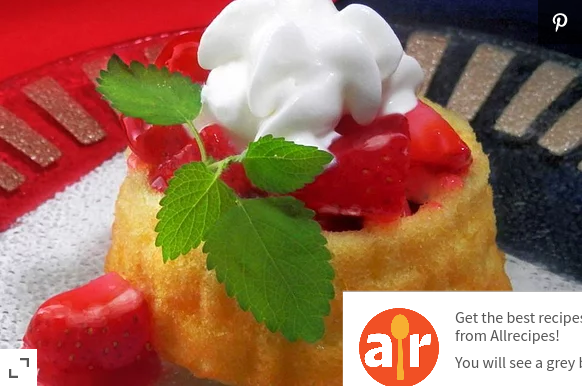

Strawberry Shortcake Recipe

Description
This sweet treat will make your man want to beat his meat!
Ingredients
- Frozen whipped topping
- 1 package cream cheese
- 1 prepared angel food cake
- 1 package strawberry glaze
- 1 pint fresh strawberries
Steps
- Beat whipped topping and cream cheese together in a bowl with an electric mixer.
- Gently stir angel food cake pieces into whipped topping mixture; pour into a serving dish.
- Stir strawberry glaze and sliced strawberries together in a bowl; spread over cake mixture.